1 Linux系统简介¶
1. 操作系统概述¶
1.1.计算机原理¶
现代计算机大部分都是基于 冯.诺依曼结构 ，该结构的核心思想是将程序和数据都存放在计算机中，按存储器的存储程序首地址执行程序的第一条指令，然后进行数据的处理计算。
计算机应包括运算器 控制器 储存器 输入和输出设备五大基本部件。
计算机内部采用二进制来表示指令和数据,将编写好的程序送入储存器中，然后启动计算机工作，勿需操作人员干预，能自动逐条取出指令和执行指令。

计算机是由软件和硬件组成。硬件主要由CPU 存储设备 输入输出设备组成。软件包括操作系统，系统软件和应用软件。

1.2.什么是操作系统¶
操作系统 ，英文为operating system（简称OS）。百科对其定义为:操作系统是管理计算机硬件与软件资源的计算机程序，同时也是计算机系统的内核与基石。简单来说，操作系统就是一个程序，这个程序和我们平时使用的程序略有不同，其作用是帮助我们协调 管理和控制计算机硬件和软件。没有操作系统的计算机称之为"裸机"。操作系统运行在裸机上，任何其他软件在操作系统的支持下才能运行。
操作系统的存在意义是使编程变得更简单。如果没有操作系统，一个程序员编写应用程序需要先编写一个可以操控计算机硬件的程序，再在这个程序的基础上去编写应用程序，而想要编写一个操控计算机硬件的程序，需要去了解计算机各硬件的工作原理，然后调用相应的指令集去对其进行控制。
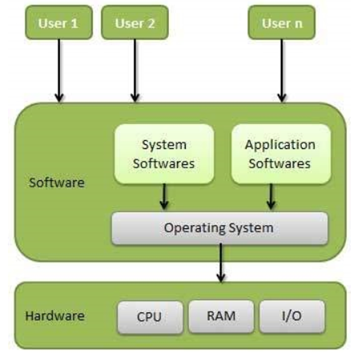
1.3.操作系统分类¶
操作系统发展至今，种类繁多，可以根据应用的不同领域进行划分：桌面操作系统 服务器操作系统 嵌入式操作系统 移动设备操作系统
1.3.1.桌面操作系统¶
通常所谓的桌面指的是图形化操作页面。在桌面操作系统诞生之前，最有名的操作系统就是DOS，但是DOS的操作界面十分不友好，仅仅是代码而已，为此，微软公司推出了它们的第一个图形界面操作系统-windows 1.0，尽管只有256色，但是在当时已经够吸引人了，直到今天mac os windows linux三足鼎立的局面。
1.3.2.嵌入式操作系统¶
嵌入式系统是一种"完全嵌入受控器件内部，为特定应用而设计的专用计算机系统"，如μClinux（嵌入式Linux） WinCE（微软嵌入式 移动计算平台） RTOS（嵌入式实时操作系统，军事航空领域）或者其他操作系统。在工业 军事 航空等领域使用较多。


1.3.3.服务器操作系统¶
服务器操作系统一般指的是安装在大型计算机上的操作系统，比如Web服务器 应用服务器和数据库服务器等，是企业IT系统的基础架构平台。服务器操作系统主要分为四大流派：Unix Linux Windows Server 和Netware。
1.3.4.移动设备操作系统¶
移动设备也就是所说的手机。操作系统主要应用在智能手机上。
目前应用在手机上的操作系统主要有 **Android（谷歌） iOS （苹果） Symbian（诺基亚） BlackBerry OS（黑莓） windows mobile（微软） Harmony（华为鸿蒙）**等。
2. Linux基础入门¶
2.1.Linux发展史¶
2.1.1.Unix的起源及发展¶
Unix是较早被广泛使用的计算机操作系统之一；
1969年，Unix系统的第一个版本由Ken Thompson在AT&T贝尔实验室实现,20世纪70年代末：AT&T成立Unix系统实验室；
20世纪70年代末：CSRG（加州大学伯克利分校计算机系统研究小组）使用Unix对操作系统进行研究并后续延伸出著名的BSD Unix(Berkeley Software Distributions)版本；
2.1.2.开放源代码的发展¶
源代码是指未编译的按照一定的程序设计语言规范书写的文本文件，开放源代码就是程序开发者将自己的写的代码文件公开给别人学习使用或修改。起初Unix是AT&T实验室一个开放源代码的项目，所以Unix的源代码可以被轻易获得，但随着Unix的广泛应用，AT&T开始认识到Unix的价值，1979年成立了专门的Unix实验室（USL），并且AT&T同时宣布了对Unix的拥有权和商业化。
这也导致了CSRG发布了BSD Unix；1983年，为了反对软件所有权私有化的趋势，Richard Stallman发起了GNU计划来推进开放源代码的发展，并为此开发了很多软件，并创建了自由软件基金会（FSF）和制定了GNU通用公共许可证,提出了"反版权"的概念。
2.1.3.Linux的诞生¶

Linux详细发展历史：
https://www.linuxprobe.com/linux-historical-chronology.html
概括来说， Linux内核项目由芬兰的Linux Torvalds创建并主管后续升级维护，logo标志取至芬兰的吉祥物。最主要的是，开源！

2.2.Linux内核（kernel）¶
内核(kernel)是操作系统的心脏, 是运行程序和管理磁盘和打印机等硬件设备的核心程序。在linux的术语中，内核指操作系统的核心。
Linux内核版本：
稳定版，具有工业级强度, 可以广泛的应用和部署.
开发版，由于要试验各种解决方案, 所以变化很快
内核源码网址: http://www.kernet.org
所有来自全世界的对linux源码的修改最终都会汇总到这个网站, 由Linus领导的开源社区对其进行甄别和修改, 最终决定是否进入到Linux主线内核源码中。
因此，通常所说的linux操作系统有以下几个部分组成：
GNU/Linux 操作系统=linux 内核+GNU 软件及系统软件+必要的应用程序

2.3.Linux发行版¶
Linux发行版就是由Linux内核与各种常用软件的集合产品，如今全球大约有数百款的Linux发行版本。
从大的方面来说，Linux发行版可大致分为 个人桌面版 和 企业服务器版。
2.3.1.个人桌面版¶
面向个人用户。由于安装了图像界面，界面美观 操作方便，比较适合新手，但相对于服务器版来说较消耗资源。
常见的桌面版有Ubuntu Debian Fedora CentOS openSUSE等。
2.3.2.企业服务器版¶
面向企业用户。系统稳定性好，资源消耗较小，满足企业需求，但基本都是命令行界面，需要有一定的基础才能上手操作。
常见的服务器版有RedHat企业版 CentOS Debian Ubuntu openSUSE 等。
3. VMware虚拟机¶
3.1.VMware虚拟网络¶
3.1.1.虚拟网卡 虚拟交换机¶
网卡，又称网络适配器，是一块被设计用来允许计算机在计算机网络上进行通讯的计算机硬件。它使得用户可以透过电缆或无线相互连接。在网络上的每一个计算机网卡都必须拥有一个独一无二的MAC地址。
当使用VMware Workstation安装一个虚拟机时就会自动安装一块虚拟有线网卡，此外还可手动给虚拟机添加多块虚拟网卡。
交换机用于电（光）信号的转发。可以为接入交换机的任意两个网络节点提供独享的电信号通路。简单的理解可以把一些电脑连接在一起组成一个局域网。
安装VMware Workstation 12时就自动安装了20台虚拟交换机。

常用的交换机是VMnet0 VMnet1 VMnet8，分别对应VMware的三种网络模式。
3.1.2.虚拟网桥¶
网桥（Bridge）是一个局域网与另一个局域网之间建立连接的桥梁。它是扩展网络和通信的手段，在各种传输介质中转发数据信号，扩展网络的距离。
在VMware中，只有创建的虚拟机所使用的虚拟网卡连接到VMnet0虚拟交换机上才会应用虚拟网桥。
3.1.3.虚拟DHCP服务器¶
在虚拟网卡连接到VMnet1或VMnet8虚拟交换机时，自动安装运行虚拟DHCP服务器并连接至这台虚拟交换机。
DHCP服务器: （Dynamic Host Configuration Protocol, 动态主机配置协议），主要有两个用途：
-
给内部网络自动分配IP地址；
-
作为对所有计算机作中央管理的手段。

3.1.4.虚拟NAT服务器¶
只在虚拟网卡连接到VMnet8 (NAT)虚拟交换机时才自动安装运行虚拟NAT服务器，并连接至这台虚拟交换机。
NAT服务器: （Network Address Translation, 网络地址转换）提供NAT功能的服务器：就是把在内部网络中使用的IP地址转换成外部网络中使用的IP地址，把不可路由的IP地址转化成可路由的IP地址，对外部网络隐蔽内部网。

3.1.5.主机虚拟网卡¶
当我们安装VMware Workstation 12时，就会在我们的实体PC机器上安装主机虚拟网卡。

3.2.VMware网络模式¶
3.2.1.Bridged(桥接)¶
桥接模式就是将主机网卡与虚拟机虚拟的网卡利用虚拟网桥进行通信。在桥接的作用下，类似于把物理主机虚拟为一个交换机，所有桥接设置的虚拟机连接到这个交换机的一个接口上，物理主机也同样插在这个交换机当中，所以所有桥接下的网卡与网卡都是交换模式的，相互可以访问而不干扰。在桥接模式下，虚拟机ip地址需要与主机在同一个网段，如果需要联网，则网关与DNS需要与主机网卡一致。

至于是桥接到宿主机的无线网卡还是有线网卡取决于宿主机上网模式。
桥接模式下最大的特点就是虚拟机的网络特性跟主机除了ip外几乎一致。
3.2.2.NAT(网络地址转换)¶
在NAT网络中，会使用到VMnet8虚拟交换机，宿主机上的VMware Network Adapter VMnet8虚拟网卡被连接到VMnet8交换机上，来与虚拟机进行通信，但是VMware Network Adapter VMnet8虚拟网卡仅仅是用于和VMnet8虚拟交换机网段通信用的，它并不为VMnet8网段提供路由功能，处于虚拟NAT网络下的虚拟机是使用虚拟的NAT服务器连接的Internet的。

这时候，虚拟机和宿主机就可以实现互访了，若此时宿主机已经连接到了Internet，那么虚拟机也就可以连上Internet了。VMware Network Adapter VMnet8虚拟网卡在这里仅仅是为Host和NAT虚拟网络下的虚拟机通信提供一个接口。所以，即便卸载掉这块虚拟网卡，虚拟机仍然是可以上网的，只是宿主机无法再访问VMnet8网段而已。
NAT模式下，宿主机需要开启VMware NAT Service和VMware DHCP Service。
采用NAT模式最大的优势是虚拟系统接入互联网非常简单，你不需要进行任何其他的配置，只需要宿主机器能访问互联网即可。 如果你想利用VMware安装一个新的虚拟系统，在虚拟系统中不用进行任何手工配置就能直接访问互联网，建议你采用NAT模式。
3.2.3.Host-only (主机)¶
Host-Only模式其实就是NAT模式去除了虚拟NAT设备，然后使用VMware Network Adapter VMnet1虚拟网卡连接VMnet1虚拟交换机来与虚拟机通信的，Host-Only模式将虚拟机与外网隔开，使得虚拟机成为一个独立的系统，只与主机相互通讯。
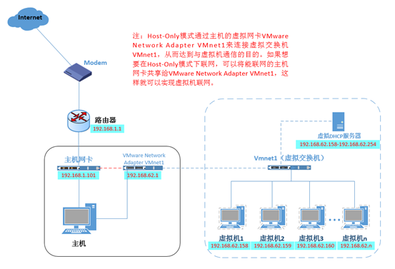
3.3.FinalShell安装使用¶

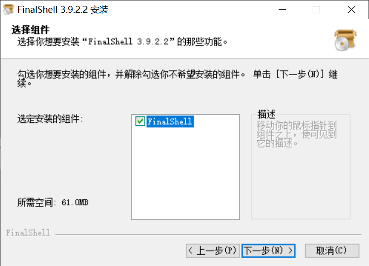
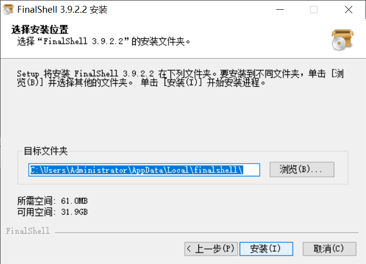
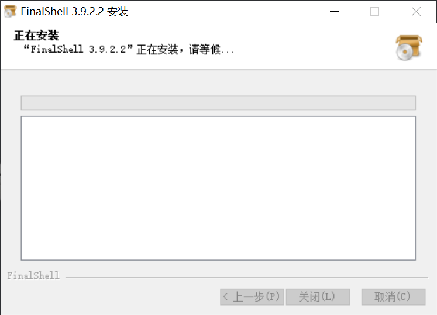
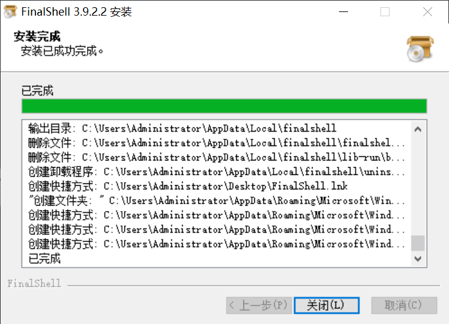
- SSH连接到Linux

- 输入名称 主机 用户名 密码
名称任意
主机: 192.168.88.161
用户名: root
密码: 123456

- 双击node1进行连接

或者这里
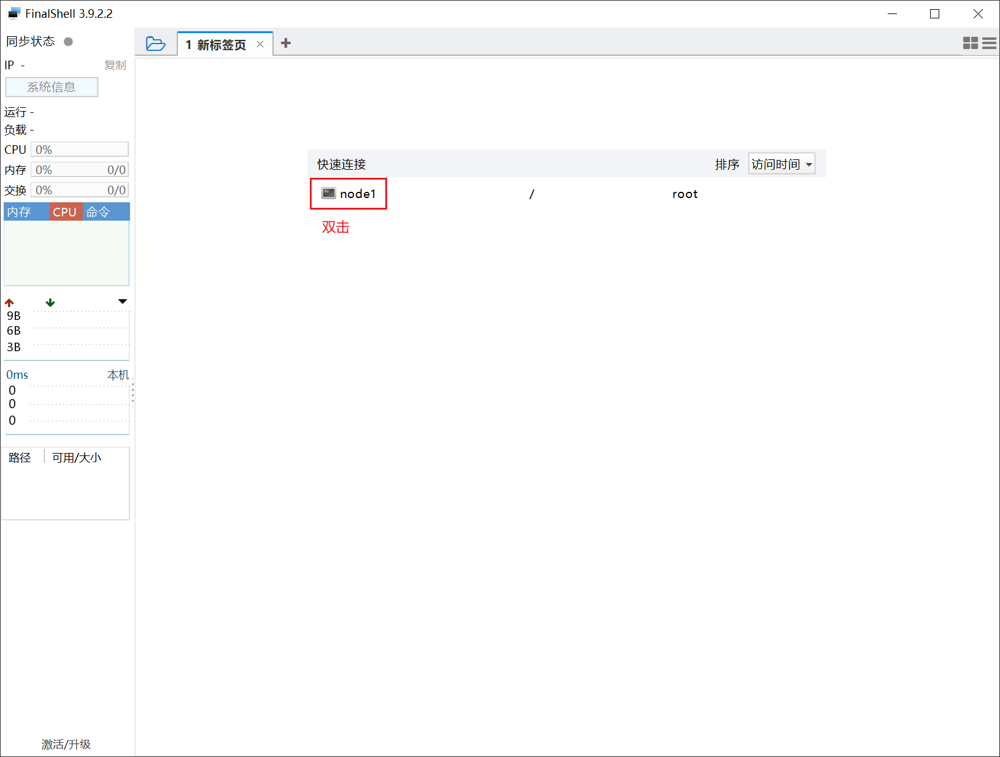
- 进入Linux命令行
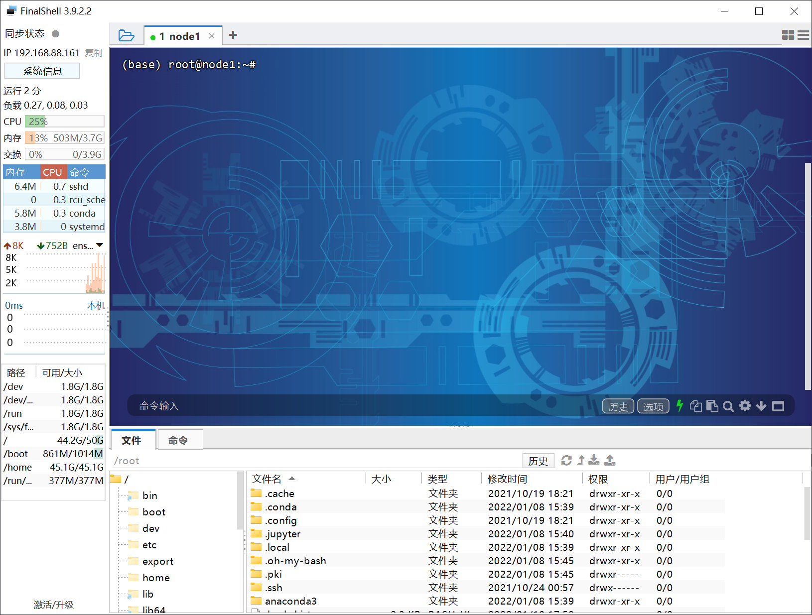
3.4.SSH(安全外壳协议)¶
SSH为Secure Shell的缩写,是一种网络安全协议，专为远程登录会话和其他网络服务提供安全性的协议。通过使用SSH，可以把传输的数据进行加密,有效防止远程管理过程中的信息泄露问题。
从客户端来看，有两种验证方式：基于密码 基于密钥
3.4.1.用户名密码验证方式¶

说明：
（1） 当客户端发起ssh请求，服务器会把自己的公钥发送给用户；
（2） 用户会根据服务器发来的公钥对密码进行加密；
（3） 加密后的信息回传给服务器，服务器用自己的私钥解密，如果密码正确，则用户登录成功。
3.4.2.基于密钥的登录方式¶
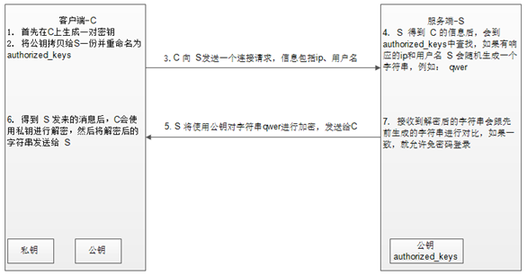
说明：
（1） 首先在客户端生成一对密钥（公钥 私钥）；
（2） 客户端将生成的公钥拷贝到需要访问的服务端机器上；
（3） 当客户端再次发送一个连接请求，包括ip 用户名；
（4） 服务端得到客户端的请求后，会到authorized_keys中查找，如果有相应的IP和用户，就会随机生成一个字符串，例如：qwer；
（5） 服务端将使用客户端拷贝过来的公钥对随机字符串qwer进行加密，然后发送给客户端；
（6） 得到服务端发来的消息后，客户端会使用私钥进行解密，然后将解密后的字符串发送给服务端；
（7） 服务端接受到客户端发来的字符串后，跟之前的字符串进行对比，如果一致，就允许免密码登录。
3.4.3.OpenSSH使用¶
OpenSSH是SSH协议的免费开源实现。
OpenSSH由客户端和服务端的软件组成。服务端是一个守护进程(daemon)，他在后台运行并响应来自客户端的连接请求。服务端一般是sshd进程，提供了对远程连接的处理。
客户端包含ssh程序以及像scp（远程拷贝） slogin（远程登陆） sftp（安全文件传输）等其他的应用程序。
默认情况下，CentOS系统会自带安装OpenSSH服务。
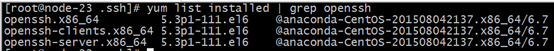
使用示例： 配置node1至node2机器的免密登录。
- 在node1机器上，ssh-keygen -t rsa [dsa] 按四下回车，生成密钥文件和私钥文件
id_rsa,id_rsa.pub - 将公钥拷贝给node2机器 ssh-copy-id node2
首次链接需要输入用户密码 验证成功后后续免密登陆。
3.5.文件上传 下载¶
在涉及Linux相关的开发中，经常需要进行linux和Windows之间的文件 安装包等上传和下载操作。sftp和lrzsz是使用比较广泛的两种方式。
3.5.1.SFTP¶
sftp是Secure File Transfer Protocol的缩写，安全文件传送协议。可以为传输文件提供一种安全的网络的加密方法。sftp为 SSH的其中一部分，本身没有单独的守护进程，使用sshd守护进程（端口号默认是22）来完成相应的连接和答复操作。
SecureCRT远程连接至CentOS后，按alt+p即可打开sftp会话窗口。
常用的sftp命令有：
pwd 和 lpwd
pwd是看sftp服务所在机器（即CentOS）默认的当前目录
lpwd是看Windows本地默认目录。

ls 和 lls
ls查看sftp服务器默认当前目录下内容
lls是看Windows默认当前目录下内容
put d:/sparksql_textdata.csv
把Windows上文件上传到sftp服务器的默认当前目录下

get install.log.syslog
把sftp服务器当前目录下的文件下载到windows当前目录下
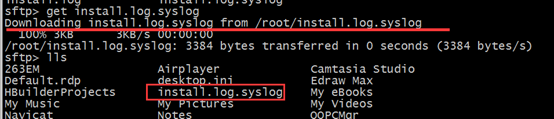
help
帮助命令。列出sftp的使用方法。
3.5.2.lrzsz¶
lrzsz是一款在linux里可代替sftp上传和下载的程序。
Centos系统中，可直接yum -y install lrzsz 程序会自动安装好，也可以下载安装包离线进行安装，详细参考附件资料。
上传文件：命令行输入rz,打开上传文件会话窗口。

下载文件：sz 下载文件路径

3.6.系统备份（快照）¶
3.6.1.备份系统¶
a. 右键目标centos系统 -> 快照 -> 快照管理器
b. 拍摄快照
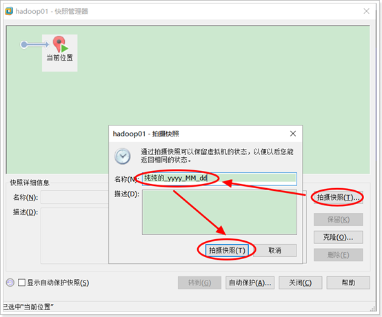
3.6.2.系统恢复(恢复到快照状态)¶
右键目标centos系统 -> 快照 -> 恢复到指定快照即可
4. Linux常用基础命令¶
Linux刚面世时并没有图形界面, 所有的操作全靠命令完成, 如磁盘操作 文件存取 目录操作 进程管理 文件权限设定等。在职场中，大量的服务器维护工作 都是远程通过SSH客户端来完成的，并没有图形界面，所有的维护工作都需要通过命令来完成。
Linux部分常用命令：
| 命令 | 对应英文 | 作用 |
|---|---|---|
| ls | list | 查看当前目录下的内容 |
| pwd | print working derectory | 查看当前所在文件夹 |
| cd [目录名] | change directory | 切换文件夹 |
| touch [文件名] | touch | 如果文件不存在, 新建文件 |
| mkdir [目录名] | make directory | 创建目录 |
| rm [文件名] | remove | 删除指定的文件名 |
| clear | clear | 清屏 |
Linux文件系统目录树
windows系统可以拥有多个盘符, 如 C盘 D盘 E盘。
Linux没有盘符这个概念, 只有一个根目录/, 所有文件都在它下面：

Linux主要目录：

/bin： 二进制命令所在的目录
/boot： 系统引导程序所需要的文件目录，引导系统开机
/dev：设备软件目录，磁盘，光驱，
/etc： 系统配置，启动程序
/home：普通用户的家，目录默认数据存放目录
/lib： 启动系统和运行命令所需的共享库文件和内核模块存放
/mnt：临时挂载储存设备的挂载点，
/proc：操作系统运行时，进程信息和内核信息存放在这里
/root： Linux 超级权限用户root的家目录
/sbin：和管理系统相关的命令，【超级管理员用】
/tmp：临时文件目录，这个目录被当作回收站使用
/usr：用户或系统软件应用程序目录
/var：存放系统日志的目录
注意：一般不要操作非自己创建的目录和文件，否则可能导致服务器崩溃。
4.1.命令帮助手册¶
因为一个命令有很多可选项, 死记硬背肯定不行, 所以需要借助手册查阅.
在线手册：https://www.runoob.com/linux/linux-command-manual.html
4.1.1.help命令¶
命令格式： command --help
例子： ls --help
说明: 显示 command 命令的帮助信息
缺点: 虽然可以查询命令的帮助信息, 但是没有提供 翻页 搜索功能.
4.1.2.man命令¶
命令格式： man command
例子： man ls
说明: 查询command命令的使用手册
man 时 manual 的缩写, 是Linux提供的一个手册, 包含了绝大部分的命令 函数的详细使用说明.
使用 man时的操作键:
| 操作键 | 功能 |
|---|---|
| 空格键 | 显示手册的下一屏 |
| Enter键 | 一次滚动首页也得一行 |
| b | 回滚一屏 |
| f | 前滚一屏 |
| q (quit) | 退出 |
| /word | 搜索word字符串 |
| n(next) | 搜索下一个 |
| N | 搜索上一个 |
4.2.文件和目录的常用命令¶
目标：学习掌握以下命令
- 查看目录内容： ls
- 切换目录： cd
- 创建和删除操作： touch rm mkdir
- 拷贝和移动文件： cp mv
- 查看文件内容： cat less tail head grep
- 其他： echo 重定向 >和 >> 管道 |
4.2.1 查看目录内容¶
1 终端使用技巧¶
A 自动补全
- 在敲出 文件/ 目录 / 命令 的前几个字母之后, 按下 tab键
- 如果还存在其他 文件 / 目录 / 命令, 再按一下tab键, 系统会提示可能存在的命令
B 曾经使用过的命令
- 使用 上/ 下 光标键可以在曾经使用过的命令之间来回切换
- 如果想要退出选择, 并且不想执行当前选中的命令, 可以按 ctrl + c
2 ls命令说明¶
ls是英文单词list的简写, 其功能为列出目录的内容,是用户最常用的命令之一
因为需要编辑服务器上的文件, 所以需要先确认指定目录下是否存在
linux 下文件和目录的特点：
- linux文件 或者 目录 名称最长可以 256个字符
- 以 .开头的文件为隐藏文件, 需要用 -a 参数才能显示
- .代表当前目录
- ..代表上一级目录
案例：
1 创建文件 01.txt
2 创建隐藏文件 02.txt
3 列出隐藏文件和非隐藏文件
3 ls命令常用选项¶
如果 只使用ls命令 就只能看到当前目录下 非隐藏 文件。
如果想增强功能，就需要学习更多的选项
| 选项 | 英文 | 含义 |
|---|---|---|
| -a | all | 显示指定目录下所有子目录与文件, 包含隐藏文件 |
| --- | --- | --- |
| -l | ||
| 以列表方式显示文件的详细信息 | ||
| -h | human-readable | 配合 -l 以人性化的方式显示文件大小 |
案例：
1 切换到 /usr/tmp 清空内容
2 创建隐藏文件 非隐藏文件 目录
3 查看当前目录内容 (缺点: 隐藏文件看不到)
4 查看当前目录所有内容 (既包含隐藏, 也包含非隐藏)
5 查看目录内容的详细信息(查看文件类型 权限 大小等 缺点：文件大小没有单位)
6 简化合并 查看目录内容的详细信息(要显示文件大小)
命令如下：

4 ls命令中通配符的使用¶
准备工作
# 切换到临时目录(先使用, 稍候讲解)
cd /usr/tmp
# 清空目录内容(先使用, 稍候讲解)
rm -rf \*
# 创建文件
touch a23.txt 11.txt 111.txt 112.txt 123.txt 223.txt 323.txt 423.txt 523.txt
# 查看目录内容
ls
代码如下
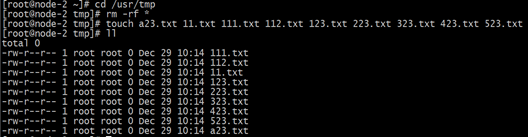
| 通配符 | 含义 |
|---|---|
| * | 代表 任意个数 的字符 |
| ? | 代表任意一个字符, 且只能是一个 |
| [abc] | 匹配a b c中任意一个 |
| [a-f] | 匹配从a到f范围内的任意一个字符 |
案例：
1 查看以 1 开头的文件或目录
2 查看以 3.txt 结尾的 文件或目录
3 查看含有3的文件列表
4 查看第二个字符是2的文件
5 查看 第一个字符是 1到5, 以23.txt结尾 的 目录或文件名
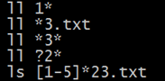
4.2.2 切换目录¶
1 cd命令¶
cd 是英文单词 change directory的缩写, 其功能为 更改当前的工作目录, 也是用户最常用的命令之一
注意: linux的所有 目录 和 文件名 都是大小写敏感的
| 命令 | 含义 |
|---|---|
| cd 目录 | 切换到指定目录下 |
| cd .. | 切换到上级目录 |
| cd - | 可以在最近的两次目录之间切换 |
需求：
1 查看当前所在目录
2 切换到 /usr/local
3 切换到 上一级目录 /usr
4 后退到上一次访问的目录中
代码如下：
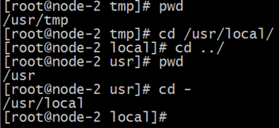
2 相对路径和绝对路径¶
1 相对路径¶
特征: 相对路径 输入路径时, 最前面不是以 "/" 开始的, 表示相对 当前目录 所在的位置
缺点: 参照工作目录 发生变化 相对路径也要发生变化
演示案例：
需求1: 当前工作目录是 /usr, 使用相对路径 切换到 /usr/tmp 目录下
需求2: 当前工作目录是 /root, 使用相对路径 切换到 /usr/tmp 目录下
在root目录下时，无法使用相对路径实现切换到/usr/tmp目录
代码如下：

2 绝对路径¶
特征: 绝对路径 在输入路径时, 最前面是以 /开始的, 表示从 根目录 开始的具体目录位置
优点: 定位准确, 不会因为 工作目录变化 而变化
演示案例：
需求1: 当前工作目录是 /usr, 使用绝对路径 切换到 /usr/tmp 目录下
需求2: 当前工作目录是 /root, 使用绝对路径 切换到 /usr/tmp 目录下
小结：
相对路径 在输入路径时, 最前面不是以 /开始的, 表示相对 当前目录 所在的目录位置
绝对路径 在输入路径时, 最前面是以 /开始的, 表示 从 根目录 开始的具体目录位置
4.2.3 创建和删除操作¶
1 创建文件¶
命令格式： touch 文件
案例：
第一步: 创建一个空白文件
touch 不存在的文件
第二步: 修改文件的末次修改日期
touch 存在的文件
小结：
通过 touch 文件名 创建文件 和 修改文件的末次访问时间
2 创建目录¶
命令格式： mkdir 文件目录
案例：
第一步: 创建 没有层级关系的目录(单层次目录)
mkdir 目录名
第二步: 创建 有层级关系的目录（创建多层次目录）
mkdir -p 目录1/目录2/目录3
mkdir命令选项：
| 选项 | 英文 | 含义 |
|---|---|---|
| -p | parent | 可以递归创建目录 |
3 删除文件或目录¶
通过 rm -rf 文件/目录 命令实现删除文件和目录的功能
rm对应的英文是 remove含义: 删除
案例1: 删除文件 (有提示)
rm 文件
案例2: 删除文件 (取消提示)
rm -f 文件
| 参数 | 英文 | 含义 |
|---|---|---|
| -f | force (强制) | 强制删除,忽略不存在的文件, 无需提示 |
案例3: 删除目录
rm -rf 目录
| 参数 | 英文 | 含义 |
|---|---|---|
| -r | recursive (递归) | 递归地删除目录下的内容, 删除文件夹 时必须加此参数 |
案例4: rm 结合 通配符
常用通配符：*?[abc][a-z]
rm -rf *.txt
小结：
通过 rm -rf 文件/目录 完成删除 文件或目录的功能.
注意 : 使用 rm命令要小心 , 因为文件删除后不能恢复
记住：在企业开发中，自己只删除自己创建的文件
4.2.4 拷贝和移动文件¶
| 命令 | 对应英文 | 作用 |
|---|---|---|
| tree [目录名] | tree | 以树状图 列出目录中的内容 |
| cp 源文件 目标文件 | copy | 复制文件或者目录 |
| mv 源文件 目标文件 | move | 移动 文件或目录 或者 重命名 |
1 tree命令¶
通过 tree命令可以以树状图列出文件目录结构
准备工作：
# 创建目录
mkdir -p /export/aaa/bbb/ccc
# 创建文件
touch /export/aaa/01.txt /export/aaa/02.txt
touch /export/aaa/bbb/03.txt /export/aaa/bbb/04.txt
touch /export/aaa/bbb/ccc/05.txt /export/aaa/bbb/ccc/06.txt
案例1：以树形结构显示目录中的文件和目录
如果指定目录, 就显示指定目录的内容
如果不指定目录,就显示当前目录的内容
tree [目录]
提示：默认没有安装tree时，需要联网安装
# 安装 tree组件
yum -y install tree
# 卸载 tree组件
yum -y remove tree
案例2：只显示当前目录中的文件夹(目录)
tree -d [目录]
| 选项 | 英文 | 含义 |
|---|---|---|
| -d | derictory (目录) | 只显示目录, 不显示文件 |
案例3：显示指定的两层
tree -L n [目录]
| 选项 | 英文 | 含义 |
|---|---|---|
| -L | level (层级) | 显示几层目录 |
2 cp命令（拷贝）¶
通过 cp实现复制将指定的 文件 或 目录 复制到 两一个 文件 或 目录中
案例1: 备份指定文件
cp 文件1 备份文件名
使用场景：当需要对服务器中的相关配置文件进行修改时，或其他软件中的配置文件进行修改时(例：mysql)：
建议先对要修改的配置文件进行：cp操作 备份操作
案例2: 将文件复制到目录中
cp 文件1 目录/
案例3: 将文件复制到另一个文件中, 实现覆盖效果
cp 文件1 文件2(存在的)
案例4: 复制目录 到指定 目录中
cp -r 目录1/ 目录2/
| 命令 | 英文 | 作用 |
|---|---|---|
| -r | recursive (递归) | 递归复制目标目录的内容 |
小结：
cp命令的功能是将给出的 文件 或 目录 复制到另一个 文件 或 目录 中
3 mv命令（移动）¶
通过mv命令可以用来 移动 文件 或 目录, 也可以给 文件或目录重命名
案例1: 将文件 移动 另一个目录中
mv 文件 目录/
案例2: 重命名
mv 旧文件名 新文件名
案例3: 将目录移动到 另一个目录中
mv 被移动目录 目标目录
4.2.5 查看文件内容¶
| 命令 | 对应英文 | 作用 |
|---|---|---|
| cat 文件名(小文件) | concatenate | 查看 小文件 内容 |
| less -N 文件名 | less | 分屏 显示 大文件 内容 |
| head -n 文件名 | ||
| 查看文件的 前一 部分 | ||
| tail -n 文件名 | ||
| 查看文件的 最后 部分 | ||
| grep 关键字 文件名 | grep | 根据 关键词 , 搜索文本文件内容 |
准备工作：
## 清空指定目录内容
cd /export/
rm -rf \*
## 复制 /etc/passwd 文件 到 /export/ 目录中
cp /etc/passwd /export/
## 复制 /etc/profile 文件 到 /export/ 目录中
cp /etc/profile /export/
## 罗列目录中内容
tree /export
1 cat命令¶
通过 cat会一次显示所有的内容, 适合 查看内容较少 的文本文件
案例1: 显示文件内容
cat 文件名
案例2: 显示文件内容(显示行号 包含空行)
cat -n 文件名
| 参数 | 英文 | 含义 |
|---|---|---|
| -n | number | 显示行号 |
缺点: 空行也显示行号
案例3: 显示文件内容(显示行号 排除空行)
cat -b 文件名
| 参数 | 英文 | 含义 |
|---|---|---|
| -b | number-nonblank | 非空行 显示行号 |
扩展： nl 文件名 也可以实现 非空行显示行号 的效果
| 命令 | 英文 | 含义 |
|---|---|---|
| nl 文件 | number lines of files | 查看文件内容 且 非空行显示行号 |
小结：
通过 cat 文件名 查看小文件内容
2 less命令¶
-
通过 less [参数] 文件名 命令可以用于分屏显示文件内容, 每次只显示一页内容
-
less命令适合查看 内容较多 的文本文件
准备工作：
## >> 重定向这个命令, 为了课程需要 我们先用, 后面我们会讲
## 将文件 /etc/profile 的内容 追加到 /export/01.txt目录中
cat /etc/profile >> /export/01.txt
cat /etc/profile >> /export/01.txt
cat /etc/profile >> /export/01.txt
cat /etc/profile >> /export/01.txt
cat /etc/profile >> /export/01.txt
less -N 文件名 分屏展示文件内容,适合大文件
| 参数 | 英文 | 含义 |
|---|---|---|
| -N | number | 显示文件内容 且 显示行号 |
使用 less的操作键:
| 操作键 | 功能 |
|---|---|
| 空格键 | 显示下一屏幕 |
| Enter 键 | 一次滚动一行 |
| b | 回滚一屏 |
| f | 向前一屏 |
| q | 退出 |
| /word | 搜索word字符串 |
案例2 : 根据关键词搜索内容
## 根据关键词搜索
/word
小结：
针对 linux中的文本文件信息，可以使用cat或less进行查看
通常cat适用于文本内容比较少的情况下 命令： cat 文件名 cat -n 文件名 nl 文件名
less适用文本内容比较多的情况 命令：less -N 文件名
常用操作：
f 下一页
b 上一页
q 退出
/检查的关键字 搜索文本中的关键字
n： 向下继续检索
N：向上检索
3 head命令¶
通过 head命令查看文档的前几行内容
准备工作：
## 准备一个26个字母的文件,上传到 /export/ 目录下
案例1: 查看文件的前5行内容
head -n 数字 文件
| 参数 | 英文 | 含义 |
|---|---|---|
| -n | number | 表示显示前几行内容 |
4 tail命令¶
tail命令用来查看文档(日志)的后几行内容
案例1: 查看文档的最后10行内容
tail -10 文件
案例2: 动态显示文档的最后内容,一般用来查看日志
tail -f 文件名
使用场景：在开发中当某个服务启动后，需要监控该服务中的相关参数信息时，会查看服务的日志文件信息
在开发中，通常会把一些日志信息，写入到一个log文件中。当遇到一些bug时，需要对当前的log文件进行日志的监控或查看。 会使用：tail -f log日志文件 监控日志中输出的信息，从而来排查bug
案例3: 动态显示文档的最后10行内容
tail -100f 文件名
小结：
通过 head命令查看文档的前几行内容
head -n 数值 文件名 --查看文件的前n行信息
通过 tail -10f 文件 命令 查看文档(日志)的后几行内容
tail -数值 文件名 --查看文件的后n行信息
tail -f 文件名 --动态的查看文件中的信息 （会一直滚屏）
4.2.6 其他命令¶
1 管道 |¶
通过 命令1 | 命令2可以将 命令1的结果 通过 命令2 作进一步的处理
案例1 : 过滤 /etc/目录下 以 pro开头的文件
ls /etc/ | grep ^pro
案例2 : 搜索 存在关键字 的行数
ls /etc | grep ^pro | wc -l
命令：wc[参数] [文件] ###打印文件的行数, 单词数, 字节数
参数：-l ###显示行数

小结： 管道符：|
作用：把执行的第一个命令结果，放入到管道中，用来执行第二个命令
例： ls /etc | grep ^pro
第一个命令： 查看/etc下所有的文件或目录
第一个命令执行结果：/etc下所有的文件和目录
第二个命令： grep ^pro 搜索以pro开头的文件或目录
第二个命令执行结果：把/etc下所有的文件或目录中，以pro开头检索出来
2 echo命令¶
echo string将字符串输出到控制台 , 通常会和 重定向 联合使用
演示案例：
echo hello
## 如果字符串有空格, 为了避免歧义 请增加 双引号 或者 单引号
echo "hello world"
3 重定向 >(覆盖)和>>(追加)¶
默认情况下linux执行命令后， 命令的结果会输出到控制台
通过 重定向 可以将结果 输出到文件
案例1: 将 命令的成功结果覆盖 指定文件内容
echo 2222 > 01.txt
| 命令 | 作用 |
|---|---|
| 结果 > 文件名 | >表示输出, 会覆盖文件的原有内容 |
案例2: 将 命令的成功结果追加 指定文件的后面
echo 3333333 >> 01.txt
| 命令 | 作用 |
|---|---|
| 命令 >> 文件名 | >>表示追加, 会将内容追加到已有文件的末尾 |
案例3: 将 命令的失败结果 追加 指定文件的后面
cat 不存在的目录 &>> error.log
| 命令 | 作用 |
|---|---|
| 命令 &>>文件 | &>>表示不区分错误类型 通通放到 日志中 |
小结：
通过 命令 > 文件 将 命令的成功结果覆盖 指定文件内容
通过 命令 >> 文件 将 命令的成功结果追加 指定文件的后面
通过 命令 &>> 文件 将 命令的失败结果追加 指定文件的后面
4 &&和||¶
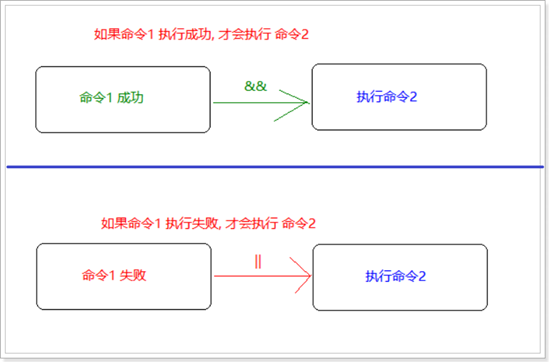
案例1：如果 创建目录 成功, 就提示 创建成功
| 命令 | 作用 |
|---|---|
| 命令1 && 命令2 | 如果 命令1执行成功了, 才执行 命令2 |
mkdir -p 正确目录 && echo "提示创建目录成功
案例2：如果 创建目录 失败, 就提示 创建失败
| 命令 | 作用 |
|---|---|
| 命令1 |
mkdir 错误目录 || echo "提示创建目录失败"
练习：
1 如果创建目录成功, 就切换到指定目录
2 如果创建文件成功, 就罗列新建文件 所在目录的内容
5 软链接（创建快捷方式）¶
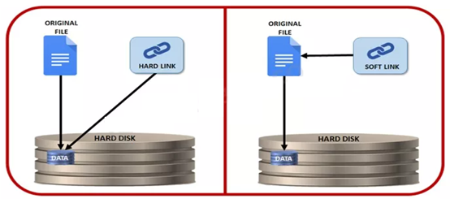
软链接也叫符号链接，相当于windows的快捷方式。主要使用场景：当文件存储的目录比较深时，为了快速的去访问藏的比较深的文件，可以给这类文件创建一个访问的快捷方式。
软链接类似一个文本文件，里面存放的是源文件的路径，指向源文件实体。删除源文件，软链接文件依然存放，但是无法访问指向的源文件路径内容了。失效的时候一般是红字白底闪烁提示。
命令格式： ln -s /源文件的绝对路径 快捷方式的访问路径
| 命令 | 英文 | 作用 |
|---|---|---|
| ln -s 目标文件绝对路径 快捷方式路径 | link | 给目标文件增加一个软链接, 通俗讲就是快捷方式 |
小结：
注意: 必须 增加 -s , 否则 就变成了 硬链接。
硬链接的作用之一是允许一个文件拥有多个有效路径名，这样用户就可以建立硬链接到重要的文件，以防止"误删"源数据。
之所以文件建立了硬链接就会防止数据误删，是因为文件系统的原理是，只要文件的索引节点还有一个以上的链接（仅删除了该文件的指向），只删除其中一个链接并不影响索引节点本身和其他的链接（数据的实体并未删除），只有当最后一个链接被删除后，此时如果有新数据要存储到磁盘上，被删除的文件的数据块及目录的链接才会被释放，空间被新数据暂用覆盖。
4.3.Linux搜索命令¶
4.3.1 find搜索¶
find是linux中最常见的搜索命令。
find命令在linux系统的整个目录结构中搜索文件，并对搜索结果执行指定的操作。
find的使用格式如下：
find <指定目录 > <指定条件 > <指定动作 >
- <指定目录>： 所要搜索的目录及其所有子目录。默认为当前目录
- <指定条件>： 所要搜索的文件的特征
- <指定动作>： 对搜索结果进行特定的处理
如果什么参数也不加，find默认搜索当前目录及其子目录，并且不过滤任何结果（也就是返回所有文件），将它们全都显示在屏幕上。
1 find命令基本应用¶
通过find命令 **在特定目录下( 包含它的后代目录) **搜索符合条件的文件。
find命令的基本使用格式：
| 命令格式 | 作用 |
|---|---|
| find [路径] -name '*.txt' | 查找指定路径下扩展名是 .txt的文件, 包括子目录 |
说明：1 如果省略路径, 表示在当前文件夹下查找
2 之前学习的通配符, 在使用find命令时同时可用
准备工作
## 切换目录到 /root/test_tar/
mkdir /root/test_tar
cd test_tar/
## 新增目录 且 切换目录 且 新增文件
mkdir -p aaa/bbb/ccc/ddd/eee/
touch aaa/bbb/ccc/ddd/eee/abc.txt
touch aaa/123.txt
touch aaa/312.txt
## 查看 /root/test_tar 目录中的内容
tree /root/test_tar
## ===================实现目标============================
## 方式一: 指定全目录
find /root/test_tar/ -name 'abc.txt'
## 方式二: 当前目录
find . -name 'abc.txt'
## 方式三: 当前目录 可以 省略 不写
find -name 'abc.txt'
## =================准备工作===============
## 创建测试文件
touch /root/test_tar/12.txt /root/test_tar/616.txt /root/test_tar/321.txt
## =================实现目录===============
find /root/test_tar/ -name "\*1\*"

案例3: 搜索指定目录下,所有以.txt为扩展名的文件
find /root/test_tar/ -name "\*.txt"
案例4: 搜索指定目录下, 以数字1开头的文件
find /root/test_tar -name "1\*"

2 find扩展实例¶
find命令的基本格式： find 目录 -name '*.txt'
find . -name "*.log" -ls在当前目录查找以.log 结尾的文件， 并显示详细信息。
find /root/ -perm 777查找/root/目录下权限为 777 的文件
find . -type f -name "*.log"查找当目录，以.log 结尾的普通文件
find . -type d | sort查找当前所有目录并排序
find . -size +100M查找当前目录大于 100M 的文件
4.3.2 grep命令¶
grep 命令是一种强大的 文本搜索工具 ，它能使用正则表达式搜索文本，并把匹配的行打印出来
使用实例：
ps -ef | grep sshd查找指定 ssh 服务进程
ps -ef | grep sshd | grep -v grep查找指定服务进程，排除 gerp 本身
ps -ef | grep sshd -c 查找指定进程个数
cat a.txt | grep -f b.txt从文件中读取关键词进行搜索 输出 a.txt 文件中含有从 b.txt 文件中读取出的关键词的内容行
cat a.txt | grep -nf b.txt 从文件中读取关键词进行搜索, 显示行号
grep -n 'linux' test.txt从文件中查找关键词，并显示行号
cat test.txt | grep ^u找出以 u 开头的行内容
cat test.txt |grep [u]输出非 u 开头的行内容
cat test.txt |grep hat$输出以 hat 结尾的行内容
cat test.txt | grep -E "ed|at"显示包含 ed 或者 at 字符的内容行
4.3.3 locate命令¶
locate命令其实是"find -name"的另一种写法，但是要比后者快得多，原因在于它不搜索具体目录，而是搜索一个数据库（/var/lib/locatedb），这个数据库中含有本地所有文件信息。Linux系统自动创建这个数据库，并且每天自动更新一次，所以使用locate命令查不到最新变动过的文件。为了避免这种情况，可以在使用locate之前，先使用 updatedb 命令，手动更新数据库。
如果是精简版 CentOS 系统需要安装 locate 命令
yum -y install mlocate
updatedb 命令来创建 locate 命令依赖的数据库
updatedb
使用实例：
locate /etc/sh搜索 etc 目录下所有以 sh 开头的文件
locate pwd查找和 pwd 相关的所有文件
4.4.解压缩命令¶
解压缩命令能做什么呢？
1 从第三方下载软件压缩包, 解压缩后 安装软件 到服务器上；
2 通过打包压缩 备份文件
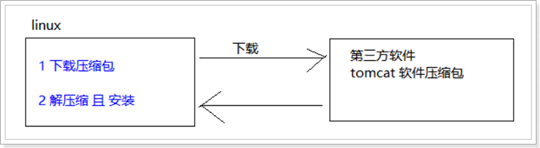
4.4.1 打包和解包¶
准备工作
## 清空指定目录内容
`mkdir /root/test_tar`
`cd /root/test_tar/ && rm -rf \*`
## 创建测试文件
touch 1.txt 2.txt 3.txt
## 创建有内容的测试目录
`mkdir -p /root/test_tar/aaa/`
`touch /root/test_tar/aaa/4.txt /root/test_tar/aaa/5.txt`
## 查看结果
`tree /root/test_tar`
1 打包¶
生活中的事例：将冬天的衣服放到袋中
在linux中可以把多个文件打包成为一个大文件，且打包后的文件需要以 .tar结尾
tar 是linux中打包命令
## 将 一系列文件 打包成 一个大文件
tar -cvf 打包名.tar 被打包的目录
tar -cvf 打包名.tar 被打包的文件1 被打包的文件2 被打包的文件3
| 命令 | 英文 | 含义 |
|---|---|---|
| c | create | 生成档案文件, 创建打包文件 |
| v | verbosely(啰嗦的) | 像 '唐僧' 一样报告进度 |
| f | file | 指定档案的文件名称, f后面一定是 .tar文件, 所以必须放到左后 |
练习题：
练习1: 将1.txt 2.txt 3.txt 打包成 123.tar文件
tar cvf 123.tar 1.txt 2.txt 3.txt
练习2: 将有内容的aaa目录 打包成 aaa.tar 文件
tar cvf aaa.tar aaa/
2 解包¶
生活中的事例：从袋子中把冬天的衣服取出来
在linux中，使用tar命令进行解包
## 将一个打包后的 分解成 一系列小文件, 分解位置为 当前目录
tar -xvf 打包名.tar ##解压到当前目录下
## 将一个打包后的 分解成 一系列小文件, 分解位置为 指定目录
tar -xvf 打包名.tar -C 解包路径位置 ## -C 指定目录 解压到指定的目录下
练习题：
练习1: 将 123.tar 解压到 当前目录中
tar xvf 123.tar
练习2: 将 aaa.tar 解包到 /root/test_tar/test/a1/b1/c1/ 目录中
4.4.2 压缩和解压缩¶
准备工作
## 创建测试文件
touch 1.txt 2.txt 3.txt
## 创建有内容的测试目录
mkdir -p /root/test_tar/aaa/
touch /root/test_tar/aaa/4.txt /root/test_tar/aaa/5.txt
## 查看结果
tree /root/test_tar
1 使用gzip格式压缩和解压缩¶
在 Linux中, 最常用的压缩文件格式是 xxx.tar.gz
在 tar命令中有一个选项 -z 可以调用 gzip , 从而可以方便的实现压缩和解压缩的功能
命令格式如下：
## 压缩文件
tar -zcvf 打包压缩文件名.tar.gz 被压缩的文件/目录
## 解压缩文件(记忆敲门: 至孝潍坊)
tar -zxvf 打包文件.tar.gz
## 解压缩到指定路径
tar -zxvf 打包文件.tar.gz -C 目录路径
| 命令 | 英文 | 含义 |
|---|---|---|
| z | gzip | 使用gzip压缩和解压缩 |
| j | bzip2 | 使用bzip2压缩和解压缩 |
练习题：
练习1: 将1.txt 2.txt 3.txt 打包压缩成 123.tar.gz文件(gzip压缩格式)
tar zcvf 123.tar.gz 1.txt 2.txt 3.txt
练习2: 将有内容的aaa目录 打包成 aaa.tar.gz 文件(gzip压缩格式)
tar zcvf aaa.tar.gz aaa/
练习3: 将 123.tar.gz 解压到 当前目录中(gzip压缩格式)
练习4: 将 aaa.tar.gz 解包到 /root/test_tar/bbb 目录中(gzip压缩格式)
2 使用bzip2格式压缩和解压缩¶
在 Linux中, bzip2 压缩文件格式是 xxx.tar.bz2
在 tar命令中有一个选项 -j 可以调用 bzip2 , 从而可以方便的实现压缩和解压缩的功能
命令格式如下：
## 压缩文件
tar -jcvf 打包压缩文件名.tar.bz2 被压缩的文件/目录
## 解压缩文件
tar -jxvf 打包文件.tar.bz2
## 解压缩到指定路径
tar -jxvf 打包文件.tar.bz2 -C 目录路径
| 命令 | 英文 | 含义 |
|---|---|---|
| z | gzip | 使用gzip压缩和解压缩 |
| j | bzip2 | 使用bzip2压缩和解压缩 |
练习题：
练习1：将1.txt 2.txt 3.txt打包压缩成123.tar.bz2文件(bzip2压缩格式)
tar jcvf 123.tar.bz2 1.txt 2.txt 3.txt
练习2: 将有内容的aaa目录 打包成 aaa.tar.bz2 文件(bzip2压缩格式)
练习3: 将 123.tar.bz2 解压到 当前目录中(bzip2压缩格式)
练习4: 将 aaa.tar.bz2 解包到 /root/test_tar/bbb 目录中(bzip2压缩格式)
5. vi/vim文本编辑器¶
5.1. 编辑器简介¶
vi编辑器是所有Unix及Linux系统下标准的编辑器，相当于windows系统中的记事本一样，它的强大不逊色于任何最新的文本编辑器。是使用Linux系统不能缺少的工具。由于对Unix及Linux系统的任何版本，vi编辑器是完全相同的。
vim（vi improved）编辑器是从 vi 发展出来的一个文本编辑器。代码补完 编译及错误跳转 语法高亮等方便编程的功能特别丰富，在程序员中被广泛使用。
简单的来说， vi 是老式的，不过功能已经很齐全了，但是还是有可以进步的地方。 vim 则可以说是程序开发者的一项很好用的工具。vim 的官方网站 (http://www.vim.org) 自己也说 vim 是一个程序开发工具而不是文字处理软件。
vi/vim编辑器的核心设计思想：
让程序员的手指始终保持在键盘的核心区域, 就能完成所有的编辑操作
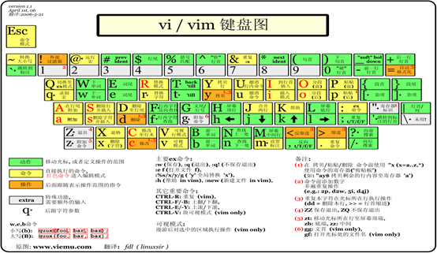
5.2. 打开和新建文件¶
如果当前的linux系统中输出：vim命令后，出现命令的不识别的情况，需要安装VIM
安装方式： yum -y install vim*
安装后，vim有一个自带教程，输入vimtutor命令即可进入，可根据tutor中的内容进行练习
在终端中输入vim在后面跟上 文件名 即可
vim 文件名
- 如果文件已经存在, 会直接打开该文件
- 如果文件不存在, 保存且退出时 就会新建一个文件
5.2.1 打开文件并且定位行¶
在日常工作中, 有可能会遇到打开一个文件, 并定位到指定行的情况。
例如: 在开发时候知道某一行代码有错误, 可以快速定位到出错误代码的位置，这个时候, 可以使用以下命令打开文件：
vim 文件名 +行数
提示: 如果只带上+ 而不指定行号, 会直接定位到文件末尾
5.2.2 异常处理¶
如果 vi 异常退出, 在磁盘上可能会保存有 交换文件
下次再使用 vi 编辑文件时, 会看到以下屏幕信息, 按下字母 d 删除交换文件即可。
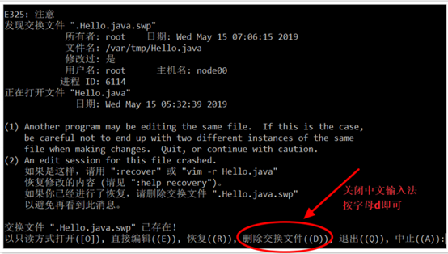
这种现象如何产生：编辑文件时没有退出, 直接关闭会话窗口。

5.2.3 vi/vim三种工作模式¶
基本上 vi/vim 共分为三种模式，分别是： 命令模式 （Command mode）， 输入模式 （Insert mode）和 底线命令模式 （Last line mode）.

1 命令模式
打开文件首先进入命令模式 , 是使用vim的 入口。
命令模式下下敲击键盘动作会被Vim 识别为命令，而非输入字符。
若想要编辑文本：必须切换到输入模式。
2 底线命令模式
执行 保存 退出等操作 (是从命令模式进入的)
要退出 vi 返回到控制台, 需要在底线命令模式下输入命令，是 vi编辑器 的 出口。
在底线命令模式中，基本的命令有（已经省略了冒号）：
q 退出程序
w 保存文件
wq 保存且退出文件
wq! 强制保存且退出文件
3 输入编辑模式
正常的编辑文字
5.3. 常用命令¶
vi命令还是比较多, 实际使用中也就是那么几个。 不奢求一下子全部都记住 , 个别命令忘记了, 只是会影响编辑速度而已. 在使用vi命令时, 注意关闭中文输入法。
熟能生巧，多用多会。
5.3.1 光标移动¶
移动光标的方法

如果想要进行多次移动的话，例如向下移动 30 行，可以使用 "30j" 或 "30↓" 的组合按键， 亦即加上想要进行的次数(数字)后，按下动作即可！
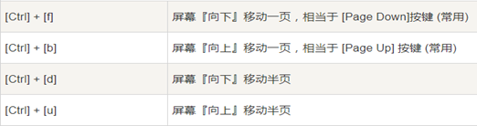
5.3.2 复制粘贴¶
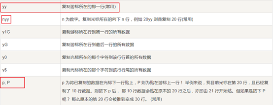
5.3.3 搜索替换¶

5.3.4 删除¶
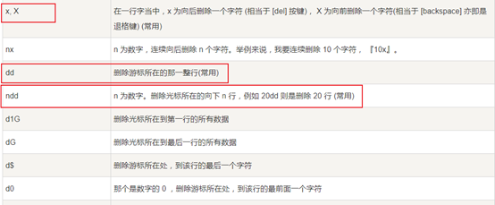
5.4. 选中文本(可视模式)¶
为了便于选取文本，VIM 引入了可视(Visual)模式。 要选取一段文本，首先将光标移到段首，在普通模式下按 v 进入可视模式，然后把光标移到段末。 需要注意，光标所在字符是包含在选区中的
v 进入字符可视化模式文本选择是以字符为单位的。
V 进入行可视化模式文本选择是以行为单位的。
Ctrl+v 进入块可视化模式可以选择一个矩形内的文本。
按 ESC 可以放弃选中, 返回到 命令模式。
5.5. 撤销和恢复撤销¶
在学习编辑命令之前,先要知道怎样撤销之前一次 错误的 编辑操作
| 命令 | 英文 | 功能 |
|---|---|---|
| u | undo | 撤销上次的命令(ctrl + z) |
| Ctrl + r | uredo | 恢复撤销的命令 |
5.6. 插入命令(重要)¶
在 vi 中除了常用 i进入 编辑模式 外, 还提供了一下命令同样可以进入编辑模式
| 命令 | 英文 | 功能 | 常用 |
|---|---|---|---|
| i | insert | 在当前字符前插入文本 | 常用 |
| I | insert | 在行首插入文本 | 较常用 |
| a | append | 在当前字符后添加文本 | |
| A | append | 在行末添加文本 | 较常用 |
| o | 在当前行后面插入一空行 | 常用 | |
| O | 在当前行前面插入一空行 | 常用 |
小结：在进入编辑模式之前，可以通常输入的命令，来进入到不同编辑状态
i：进入到编辑模式后，定位到当前光标前面
I：进入到编辑模式后，定位到当前行的首位置
a：进入到编辑模式后，定位到当前光标的后面追加要写入的内容
A：进入到编辑模式后，定位到当前行的行尾
o：进入到编辑模式后，在当前行的后面，添加一行空行
O：进入到编辑模式后，在当前行的前面，添加一行空行